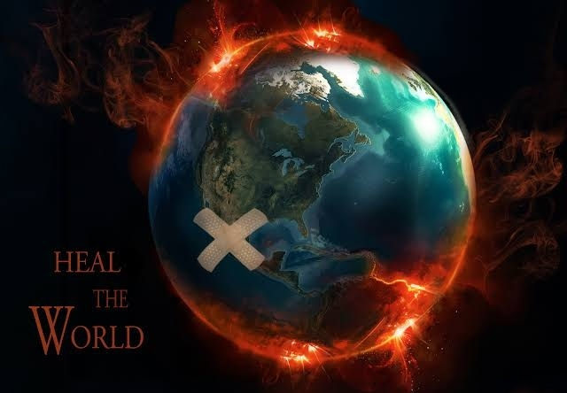

We have lived with technology for a long time, and collectively we know a lot about
it. But Change! we all change. Every single cell in our bodies changes, no
exceptions just as society changes. That which seemed fast to our parents, seems
slow to us, Both young and old have suddenly ended up in a digital society.
How do we ensure everyone can reap the benefits of these new possibilities?
How do we keep trust as the foundation of our society?
How do we deal with dialogue and decision making? and how do we use data
responsibly?
How can technology support us in living a longer and healthier life?
How do we ensure the constant learning and education of both young and old, very
young and very old?
What can we do to prepare businesses and employees for a completely new economy?
How do we keep urban and rural areas attractive?
How can we protect ourselves? our personal data, our freedom?
These dilemmas require well-thought-out solutions for the long term.
everyone has to deal with it, every cell of society.
Everything should be made as simple as possible, but not any simpler —Albert Einstein
Together, Let us create A Better World!
